산업위생관리기사 (2014-05-25 기출문제)
1과목: 산업위생학개론
1. 다음 중 직업성 질환을 판단할 때 참고하는 자료로 가장 거리가 먼 것은 무엇인가?
- 업무내용과 종사기간
- 기업의 산업재해 통계와 산재보험료
- 작업환경과 취급하는 재료들의 유해성
- 중독 등 해당 직업병의 특유한 증상과 임상소견의 유무
(정답률: 94%)

2. 다음 중 직업병의 원인이 되는 유해요인, 대상 직종과 직업병 종류의 연결이 잘못된 것은 무엇인가?
- 면분진-방직공-면폐증
- 이상기압-항공기조종-잠함병
- 크롬-도금-피부점막 궤양 폐암
- 납-축전지제조-빈혈, 소화기장애
(정답률: 68%)
3. 다음 중 산업위생 활동의 순서로 올바른 것은 무엇인가?
- 관리 → 인지 → 예측 → 측정 → 평가
- 인지 → 예측 → 측정 → 평가 → 관리
- 예측 → 인지 → 측정 → 평가 → 관리
- 측정 → 평가 → 관리 → 인지 → 예측
(정답률: 78%)
4. 사업주는 신규화학물질의 안전보건자료를 작성함에 있어 인용할 수 있는 자료가 아닌 것은 무엇인가?
- 국내외에서 발간되는 저작권법상의 문헌에 등재되어 있는 유해성ㆍ위험성 조사자료
- 유해성ㆍ위험성 시험 전문연구기관에서 실시한 유해성ㆍ위험성 조사자료
- 관련 전문학회지에 게재된 유해성위험성 조사자료
- OPEC 회원국의 정부기관에서 인정하는 유해성ㆍ위험성 조사자료
(정답률: 56%)
5. 다음 중 근골격계 질환의 특징으로 볼 수 없는 것은 무엇인가?
- 자각증상으로 시작된다.
- 손상의 정도를 측정하기 어렵다.
- 관리의 목표는 질환의 최소화에 있다.
- 환자의 발생이 집단적으로 발생하지 않는다.
(정답률: 73%)
6. 다음 중 허용농도 상한치(excursion li mits)에 대한 설명으로 가장 거리가 먼 것은 무엇인가?
- 단시간허용노출기준(TLV-STEL)이 설정되어 있지 않은 물질에 대하여 적용한다.
- 시간가중평균치(TLV-TWA)의 3배는 1시간 이상을 초과할 수 없다.
- 시간가중평균치(TLV-TWA)의 5배는 잠시라도 노출되어서는 안된다.
- 시간가중평균치(TLV-TWA)가 초과되어서는 아니 된다.
(정답률: 69%)
7. 다음 중 밀폐공간과 관련된 설명으로 바르지 않은 것은?
- “산소결핍”이란 공기 중의 산소농도가 16% 미만인 상태를 말한다.
- “산소결핍증”이란 산소가 결핍된 공기를 들이마심으로써 생기는 증상을 말한다.
- “유해가스”란 밀폐공간에서 탄산가스, 황화수소 등의 유해물질이 가스 상태로 공기 중에 발생하는 것을 말한다.
- “적정공기”란 산소농도의 범위가 18% 이상 23.5% 미만, 탄산가스의 농도가 1.5% 미만, 황화수소의 농도가 10ppm 미만인 수준의 공기를 말한다.
(정답률: 83%)
8. 다음 중 작업시작 및 종료시 호흡의 산소소비량에 대한 설명으로 바르지 않은 것은?
- 산소소비량은 작업부하가 계속 증가하면 일정한 비율로 같이 증가한다.
- 작업부하 수준이 최대 산소소비량 수준보다 높아지게 되면, 젖산의 제거 속도가 생성속도에 못 미치게 된다.
- 작업이 끝난 후에 남아 있는 젖산을 제거하기 위해서는 산소가 더 필요하며, 이 때 동원되는 산소소비량을 산소부채(oxygen debt)라 한다.
- 작업이 끝난 후에도 맥박과 호흡수가 작업개시 수준으로 즉시 돌아오지 않고 서서히 감소한다.
(정답률: 79%)
9. 근로자가 건강장해를 호소하는 경우 사무실 공기관리 상태를 평가할 때 조사항목에 해당되지 않는 것은 무엇인가?
- 사무실 외 오염원 조사 등
- 근로자가 호소하는 증상 조사
- 외부의 오염물질 유입경로 조사
- 공기정화설비의 환기량 적정여부 조사
(정답률: 73%)
10. 다음 중 근육 노동시 특히 보급해 주어야 하는 비타민의 종류는 무엇인가?
- 비타민 A
- 비타민 B1
- 비타민 C
- 비타민 D
(정답률: 80%)
11. 다음 중 역사상 최초로 기록된 직업병은 무엇인가?
- 규폐증
- 폐질환
- 음낭암
- 납중독
(정답률: 72%)
12. 작업장에 존재하는 유해인자와 직업성 질환의 연결이 올바르지 않은 것은?
- 망간 - 신경염
- 무기분진 - 규폐증
- 6가크롬 - 비중격천공
- 이상기압 - 레이노씨 병
(정답률: 77%)
13. 산업재해를 분류할 때 “경미사고(minor accidents)"혹은 ”경미한 재해“란 어떤 상태를 말하는가?
- 통원 치료할 정도의 상해가 일어난 경우
- 사망하지는 않았으나 입원할 정도의 상해
- 상해는 없고 재산성의 피해만 일어난 경우
- 재산상의 피해는 없고 시간손실만 일어난 경우
(정답률: 62%)
14. 온도가 15℃이고, 1기압인 작업장에 톨루엔이 200mg/m3으로 존재할 경우 이를 ppm으로 환산하면 얼마인가? (단, 톨루엔의 분자량은 92.13이다.)
- 53.1
- 51.2
- 48.6
- 11.3
(정답률: 65%)
15. 육체적 작업능력(PWC)이 15kcal/min인 근로자가 1일 8시간 물체를 운반하고 있다. 이 때의 작업 대사율이 6.5kcal/min이고, 휴식시의 대사량이 1.5kcal/min일 때 매 시간당 적정 휴식시간은 약 얼마인가? (단, Hertig의 식을 적용한다.)
- 18분
- 25분
- 30분
- 42분
(정답률: 66%)
16. 보건관리자가 보건관리업무에 지장이 없는 범위 내에서 다른 업무를 겸할 수 있는 사업장은 상시근로자 몇 명 미만에서 가능한 가?
- 100명
- 200명
- 300명
- 500명
(정답률: 56%)
17. 산업재해가 발생할 급박한 위험이 있거나 중대재해가 발생하였을 경우 취하는 행동으로 다음 중 가장 적합하지 않은 것은 무엇인가?
- 사업주는 즉시 작업을 중지시키고 근로자를 작업장소로부터 대피시켜야 한다.
- 직상급자에게 보고한 후 근로자의 해당 작업을 중지시킨다.
- 사업주는 급박한 위험에 대한 합리적인 근거가 있을 경우에 작업을 중지하고 대피한 근로자에게 해고 등의 불리한 처우를 해서는 안된다.
- 고용노동부장관은 근로감독관 등으로 하여금 안전보건진단이나 그 밖의 필요한 조치를 하도록 할 수 있다.
(정답률: 87%)
18. 산업위생전문가의 윤리강령 중 “전문가로서의 책임”과 가장 거리가 먼 것은 무엇인가?
- 기업체의 기밀은 누설하지 않는다.
- 과학적 방법의 적용과 자료의 해석에서 객관성을 유지한다.
- 근로자, 사회 및 전문 직종의 이익을 위해 과학적 지식은 공개하거나 발표하지 않는다.
- 전문적 판단이 타협에 의하여 좌우될 수 있는 상황에는 개입하지 않는다.
(정답률: 85%)
19. 다음 중 단기간 휴식을 통해서는 회복될 수 없는 발병 단계의 피로를 무엇이라 하는가?
- 곤비
- 정신피로
- 과로
- 전신피로
(정답률: 86%)
20. 현재 총흡음량이 1200sabins 인 작업장의 천장에 흡음물질을 첨가하여2400 sabins을 추가할 경우 예측되는 소음감음량(NR)은 약 몇 dB인가?
- 2.6
- 3.5
- 4.8
- 5.2
(정답률: 71%)
2과목: 작업위생측정 및 평가
21. 유기용제 취급 사업장의 메탄올 농도가 100.2, 89.3 , 94.5 , 99.8 , 120.5ppm이다. 이 사업장의 기하평균 농도는 무엇인가?
- 약 100.3ppm
- 약 101.3ppm
- 약 102.3ppm
- 약 103.3ppm
(정답률: 74%)
22. 유사노출그룹(HEG)에 대한 설명 중 잘못된 것은 무엇인가?
- 시료채취 수를 경제적으로 하는 데 활용한다.
- 역학조사를 수행할 때 사건이 발생된 근로자가 속한 HEG의 노출농도를 근거로 노출원인을 추정할 수 있다.
- 모든 근로자의 노출정도를 추정하는데 활용하기는 어렵다.
- HEG는 조직, 공정, 작업범주 그리고 작업(업무)내용별로 구분하여 설정할 수 있다.
(정답률: 72%)
23. 용접 작업자의 노출수준을 침착되는 부위에 따라 호흡성, 흉곽성, 흡입성 분진으로 구분하여 측정하고자 한다면 준비해야 할 측정 기구로 가장 적절한 것은 무엇인가?
- 임핀저
- Cyclone
- Cascade Impactor
- 여과집진기
(정답률: 74%)
24. 일정한 부피조건에서 압력과 온도가 비례한다는 표준 가스에 대한 법칙은 무엇인가?
- 보일의 법칙
- 샤를의 법칙
- 게이-루삭의 법칙
- 라울트의 법칙
(정답률: 76%)
25. 통계집단의 측정값들에 대한 균일성, 정밀성 정도를 표현하는 것으로 평균값에 대한 표준편차의 크기를 백분율로 나타낸 수치는 무엇인가?
- 신뢰한계도
- 표준분산도
- 변이계수
- 편차분산율
(정답률: 85%)
26. 2차 표준기구 중 일반적 사용범위가 10~150L/분, 정확도는 ±1%, 주 사용장소가 현장인 것은 무엇인가?
- 열선기류계
- 건식가스미터
- 피톳튜브
- 오리피스 미터
(정답률: 63%)
27. 유기용제인 trichloroethylene의 근로자 노출농도를 측정하고자 한다. 과거의 노출농도를 조사해 본 결과 평균 30ppm이었으며 활성탄관(100mg/50mg)을 이용하여 0.20ℓ/분으로 채취하였다. trichloro ethylene의 분자량은 131.39이고 가스크로마토그래피의 정량한계는 시료 당 0.5 mg이라면 채취해야 할 최소한의 시간은? (단, 1기압, 25℃ 기준)
- 약 52분
- 약 34분
- 약 22분
- 약 16분
(정답률: 50%)
28. 가스상 물질 측정을 위한 흡착제인 다공성 중합체에 관한 설명으로 올바르지 않은 것은?
- 활성탄보다 비표면적이 작다.
- 특별한 물질에 대한 선택성이 좋은 경우가 있다.
- 대부분의 다공성 중합체는 스티렌, 에틸비닐벤젠 혹은 디비닐벤젠 중 하나와 극성을 띤 비닐화합물과의 공중합체이다.
- 활성탄보다 흡착용량과 반응성이 크다.
(정답률: 45%)
29. 어떤 유해 작업장에 일산화탄소(CO)가 표준상태(0℃, 1기압)에서 15ppm 포함되어 있다. 이 공기 1Sm3 중에 CO는 몇 ㎍ 포함되어 있는가?
- 약 9200 ㎍/Sm3
- 약 10800 ㎍/Sm3
- 약 17500 ㎍/Sm3
- 약 18800 ㎍/Sm3
(정답률: 46%)
30. 어느 작업장에 소음발생 기계 4대가 설치되어 있다. 1대 가동시 소음 레벨을 측정한 결과 82dB을 얻었다면 4대 동시 작동시 소음 레벨은? (단, 기타 조건은 고려하지 않음)
- 89 dB
- 88dB
- 87 dB
- 86dB
(정답률: 81%)
31. 온열조건을 평가하는데 습구흑구온도지수(WBGT)를 사용한다. 태양광이 내리쬐는 옥외에서 측정결과가 다음과 같은 경우라 가정한다면 습구흑구온도지수(WBG T)는? [건구온도 : 30℃, 자연습구온도 : 32℃, 흑구온도 : 52℃]
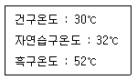
- 33.3℃
- 35.8℃
- 37.2℃
- 38.3℃
(정답률: 77%)
32. 다음 중 검지관법의 특성으로 가장 거리가 먼 것은 무엇인가?
- 색변화가 시간에 따라 변하므로 제조자가 정한 시간에 읽어야 한다.
- 산업위생전문가의 지도 아래 사용되어야 한다.
- 특이도가 낮다.
- 다른 방해물질의 영향을 받지 않아 단시간 측정이 가능하다.
(정답률: 66%)
33. 다음은 산업위생 분석 용어에 관한 내용이다. ( )안에 가장 적절한 내용은 무엇인가?
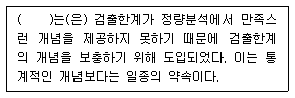
- 변이계수
- 오차한계
- 표준편차
- 정량한계
(정답률: 76%)
34. 다음은 소음의 측정시간 및 횟수의 기준에 관한 내용이다. ( )안에 옳은 내용은 무엇인가? (단, 고시 기준)
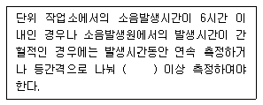
- 2회
- 3회
- 4회
- 6회
(정답률: 82%)
35. 음원이 아무런 방해물이 없는 작업장 중앙 바닥에 설치되어 있다면 음의 지향계수(Q)는 무엇인가?
- 0
- 1
- 2
- 4
(정답률: 49%)
36. 입경이 50㎛이고 입자비중이 1.32인 입자의 침강 속도는 무엇인가? (단, 입경이 1~50㎛인 먼지의 침강속도를 구하기 위해 산업위생분야에서 주로 사용하는 식 적용)
- 8.6cm/sec
- 9.9cm/sec
- 11.9cm/sec
- 13.6cm/sec
(정답률: 82%)
37. Hexane의 부분압은 120mmHg(OEL 500ppm)이라면 VHR은 무엇인가?
- 271
- 284
- 316
- 343
(정답률: 76%)
38. 어느 작업장에서 sampler를 사용하여 분진농도를 측정한 결과 sampling 전, 후의 filter 무게가 각각 21.3mg, 25.6 mg을 얻었다. 이때 pump의 유량은 45L /min 이었으며 480분 동안 시료를 채취하였다면 작업장의 분진농도는 얼마인가?
- 150 ㎍/m3
- 200㎍/m3
- 250㎍/m3
- 300㎍/m3
(정답률: 67%)
39. 열, 화학물질, 압력 등에 강한 특징이 있어 석탄건류나 증류 등의 고열공정에서 발생하는 다핵방향족탄화수소를 채취하는데 이용되는 막여과지는 무엇인가?
- PTFE 막여과지
- 은 막여과지
- PVC 막여과지
- MCE 막여과지
(정답률: 87%)
40. 다음의 여과지중 산에 쉽게 용해되므로 입자상물질 중의 금속을 채취하여 원자흡광고아도법으로 분석하는 데 적정한 것은 무엇인가?
- 은막여과지
- PVC여과지
- MCE여과지
- 유리섬유여과지
(정답률: 76%)
3과목: 작업환경관리대책
41. 밀어당김형 후드(push-pull hood)에 의한 환기로서 가장 효과적인 경우는 무엇인가?
- 오염원의 발산농도가 낮은 경우
- 오염원의 발산농도가 높은 경우
- 오염원의 발산량이 많은 경우
- 오염원 발산면의 폭이 넓은 경우
(정답률: 71%)
42. A유체관의 압력을 측정한 결과, 정압이 -18.56mmH2O이고 전압이 20mmH2O였다. 이 유체관의 유속(m/s)은 약 얼마인가? (단, 공기밀도 1.21kg/m3 기준)
- 약 10
- 약 15
- 약 20
- 약 25
(정답률: 54%)
43. 후드의 유입계수가 0.86일 때 압력 손실계수는 무엇인가?
- 약 0.25
- 약 0.35
- 약 0.45
- 약 0.55
(정답률: 74%)
44. 용접 흄이 발생하는 공정의 작업대 면에 개구면적이 0.6m2인 측방 외부식 테이블상 플랜지 부착 장방형 후드를 설치하였다. 제어속도가 0.4m/s, 환기량이 63.6m3/min이라면, 제어거리는?
- 0.69m
- 0.86m
- 1.23m
- 1.52m
(정답률: 46%)
45. 양쪽 덕트 내의 정압이 다를 경우, 합류점에서 정압을 조절하는 방법인 공기조절용 댐퍼에 의한 균형유지법에 대한 설명으로 바르지 않은 것은?
- 임의로 댐퍼 조정시 평형상태가 깨지는 단점이 있다.
- 시설 설치 후 변경하기 어려운 단점이 있다.
- 최소 유량으로 균형유지가 가능한 장점이 있다.
- 설계계산이 상대적으로 간단한 장점이 있다.
(정답률: 56%)
46. A분진의 우리나라 노출기준은 10mg/m3이며 일반적으로 반면형 마스크의 할당보호계수(APF)는 10 이라면 반면형 마스크를 착용할 수 있는 작업장 내 A 분진의 최대농도는 얼마이겠는가?
- 1mg/m3
- 10mg/m3
- 50mg/m3
- 100mg/m3
(정답률: 69%)
47. 호흡용 보호구에 대한 설명으로 바르지 않은 것은 무엇인가?
- 방독마스크는 주로 면, 모, 합성섬유 등을 필터로 사용한다.
- 방독마스크는 공기 중의 산소가 부족하면 사용할 수 없다.
- 방독마스크는 일시적인 작업 또는 긴급용으로 사용하여야 한다.
- 방진마스크는 비휘발성 입자에 대한 보호가 가능하다.
(정답률: 79%)
48. 공장의 높이가 3m인 작업장에서 입자의 비중이 1.0이고, 직경이 1.0㎛인 구형인 먼지가 바닥으로 모두 가라앉는데 걸리는 시간은 이론적으로 얼마가 되는가?
- 약 0.8시간
- 약 8시간
- 약 18시간
- 약 28시간
(정답률: 39%)
49. 원심력송풍기의 종류 중에서 전향 날개형 송풍기에 관한 설명으로 올바르지 않은 것은?
- 송풍기의 임펠러가 다람쥐 쳇바퀴 모양이며, 송풍기 깃이 회전방향과 동일한 방향으로 설계되어 있다.
- 동일 송풍량을 발생시키기 위한 임펠러 회전속도가 상대적으로 낮아 소음문제가 거의 발생하지 않는다.
- 다익형 송풍기라고도 한다.
- 큰 압력손실에도 송풍량의 변동이 적은 장점이 있다.
(정답률: 61%)
50. 덕트 설치의 주요원칙으로 바르지 않은 것은?
- 밴드(구부러짐)의 수는 가능한 한 적게 하도록 한다.
- 구부러짐 전, 후에는 청소구를 만든다.
- 공기 흐름은 상향구배를 원칙으로 한다.
- 덕트는 가능한 한 짧게 배치하도록 한다.
(정답률: 83%)
51. 송풍기의 송풍량이 4.17m3/sec이고 송풍기 전압이 300mmH2O인 경우 소요 동력은? (단, 송풍기 효율은 0.85이다.)
- 약 5.8 kW
- 약 14.4kW
- 약 18.2kW
- 약 20.6kW
(정답률: 74%)
52. 귀덮개의 장점을 모두 짝지은 것으로 가장 올바른 것은 무엇인가?
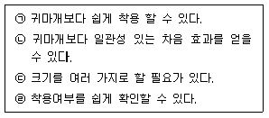
- ㉠, ㉡, ㉣
- ㉠, ㉡, ㉢
- ㉠, ㉢, ㉣
- ㉠, ㉡, ㉢, ㉣
(정답률: 68%)
53. 비극성용제에 효과적인 보호 장구의 재질로 가장 올바른 것은 무엇인가?
- 면
- 천연고무
- Nitrile 고무
- Butyl 고무
(정답률: 77%)
54. 어느 작업장에서 톨루엔(분자량 92, 노출기준 50ppm)과 이소프로필알코올(분자량 60, 노출기준 200ppm)을 각각 100g/시간을 사용(증발)하며, 여유계수(K)는 각각 10이다. 필요 환기량(m3/시간)은? (단, 21℃, 1기압기준, 두 물질은 상가작용을 한다.)
- 약 6250
- 약 7250
- 약 8650
- 약 9150
(정답률: 63%)
55. 덕트(Duct)의 직경 환산시 폭 a, 길이 b인 각관과 유체학적으로 등가인 원관의 직경 D의 계산식은 무엇인가?
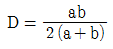
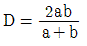
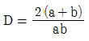
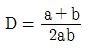
(정답률: 40%)
56. 강제 환기를 실시하는데 환기효과를 제고시킬 수 있는 필요 원칙 모두를 올바르게 짝지은 것은 무엇인가?
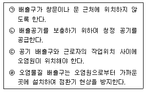
- ㉠, ㉡, ㉢
- ㉠, ㉡, ㉣
- ㉠, ㉡
- ㉠, ㉡, ㉢, ㉣
(정답률: 73%)
57. 기적이 1000m3이고 유효환기량이 50m3/min인 작업장에 메틸 클로로포름 증기가 발생하여 100ppm의 상태로 오염되었다. 이 상태에서 증기발생이 중지되었다면 25ppm까지 농도를 감소시키는데 걸리는 시간은?
- 약 17분
- 약 28분
- 약 32분
- 약 41분
(정답률: 72%)
58. 20℃의 공기가 직경 10cm인 원형 관 속을 흐르고 있다. 층류로 흐를 수 있는 최대 유량은? (단, 층류로 흐를 수 있는 임계 레이놀드수 Re=2100, 공기의 동점성계수 v=1.50×105m2/s이다.)(오류 신고가 접수된 문제입니다. 반드시 정답과 해설을 확인하시기 바랍니다.)
- 0.318m3/min
- 0.228m3/min
- 0.148m3/min
- 0.078m3/min
(정답률: 37%)
59. 1기압에서 혼합기체는 질소(N2)가 66 %, 산소(O2) 14%, 탄산가스 20%로 구성되어 있다. 질소 가스의 분압은? (단, 단위 : mmHg)
- 501.6
- 521.6
- 541.6
- 560.4
(정답률: 69%)
60. 다음은 분진발생 작업환경에 대한 대책들이다. 올바른 것을 모두 짝지은 것은 무엇인가?
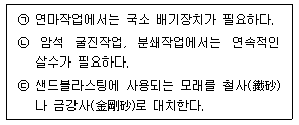
- ㉠, ㉡
- ㉡, ㉢
- ㉠, ㉢
- ㉠, ㉡, ㉢
(정답률: 76%)
4과목: 물리적유해인자관리
61. 태양광선이 내리쬐지 않는 작업장의 온열조건이 [보기]와 같을 때 습구흑구온도지수(WBGT)는 얼마인가?
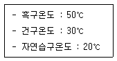
- 10℃
- 19℃
- 29℃
- 50℃
(정답률: 81%)
62. 다음 중 산소농도가 6% 이하인 공기 중의 산소분압으로 올바른 것은? (단, 표준상태이며, 부피기준이다.)
- 75mmHg 이하
- 65mmHg 이하
- 55mmHg 이하
- 45mmHg 이하
(정답률: 69%)
63. 18℃ 공기 중에서 800Hz 인 음의 파장은 약 몇 m 인가?
- 0.35
- 0.43
- 3.5
- 4.3
(정답률: 58%)
64. 음의 크기 sone과 음의 크기레벨 phon과의 관계를 올바르게 나타낸 것은 무엇인가? (단, sone은 S, phon은 L로 표현한다.)
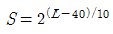
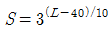
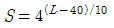
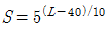
(정답률: 60%)
65. 레이저용 보안경을 착용하였을 때 4000mW/cm2의 레이저가 0.4mW/cm2의 강도로 낮아진다면 이 보안경의 흡광도(Optical Density, OD)는 얼마인가?
- 2
- 3
- 4
- 8
(정답률: 56%)
66. 광학방사선에서 사용되는 측정량과 단위의 연결이 바르지 않은 것은?
- 방사속-W
- 광속-Im(루멘)
- 휘도-cd/m2
- 조도-cd(칸델라)
(정답률: 47%)
67. 다음 중 미국의 차음평가수를 의미하는 것은?
- NRR
- TL
- SLCBO
- SNR
(정답률: 84%)
68. 소음성 난청에서의 청력 손실은 초기 몇 Hz에서 가장 현저하게 나타나는가?
- 1000Hz
- 4000Hz
- 8000Hz
- 15000Hz
(정답률: 86%)
69. 다음 중 진동작업장의 환경관리 대책이나 근로자의 건강 보호를 위한 조치로 적합하지 않는 것은 무엇인가?
- 발진원과 작업자의 거리를 가능한 한 멀리한다.
- 작업자의 체온을 낮게 유지시키는 것이 바람직하다.
- 절연패드의 재질로는 코르크, 펠트(felt), 유리섬유 등이 많이 쓰인다.
- 진동공구의 무게는 10kg을 넘지 않게 하며 장갑(glove) 사용을 권장한다.
(정답률: 78%)
70. 다음 중 마이크로파에 관한 설명으로 바르지 않은 것은?
- 주파수의 범위는 10~30000MHz 정도이다.
- 혈액의 변화로는 백혈구의 감소, 혈소판의 증가 등이 나타난다.
- 백내장을 일으킬 수 있으며 이것은 조직온도의 상승과 관계가 있다.
- 중추신경에 대하여는 300~1200MHz의 주파수 범위에서 가장 민감하다.
(정답률: 44%)
71. 다음 중 인체 각 부위별로 공명현상이 일어나는 진동의 크기를 올바르게 나타낸 것은 무엇인가?
- 둔부 : 2~4Hz
- 안구 : 6~9Hz
- 구간과 상체 : 10~20Hz
- 두부와 견부 : 20~30Hz
(정답률: 74%)
72. 다음 중 전리방사선의 흡수선량이 생체에 영향을 주는 정도를 표시하는 선당량(생체실효선량)의 단위는 무엇인가?
- R
- Ci
- Sv
- Gy
(정답률: 61%)
73. 다음 중 조명부족과 관련한 질환으로 올바른 것은?
- 백내장
- 망막변성
- 녹내장
- 안구진탕증
(정답률: 75%)
74. 고도가 높은 곳에서 대기압을 측정하였더니 90659Pa이었다. 이곳의 산소분압은 약 얼마가 되겠는가? (단, 공기 중의 산소는 21vol% 이다.)
- 135mmHg
- 143mmHg
- 159mmHg
- 680mmHg
(정답률: 34%)
75. 소음에 대한 미국 ACGIH의 8시간 노출기준은 몇 dB인가?
- 85
- 90
- 95
- 100
(정답률: 58%)
76. 다음 중 잠함병의 주요 원인은 무엇인가?
- 온도
- 광선
- 소음
- 압력
(정답률: 83%)
77. 다음 중 감압환경의 설명 및 인체에 미치는 영향으로 올바른 것은?
- 인체와 환경사이의 기압차이 때문으로 부종, 출혈, 동통 등을 동반한다.
- 대기가스의 독성 때문으로 시력장애, 정신혼란, 간질 모양의 경련을 나타낸다.
- 용해질소의 기포형성 때문으로 동통성 관절장애, 호흡곤란, 무균성 골괴사 등을 일으킨다.
- 화학적 장해로 작업력의 저하, 기분의 변환, 여러 종류의 다행증이 일어난다.
(정답률: 57%)
78. 정리방사선이 인체에 조사되면 [보기]와 같은 생체 구성 성분의 손상을 일으키게 되는데 그 손상이 일어나는 순서를 올바르게 나열한 것은 무엇인가?
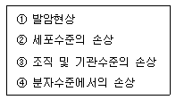
- ④ → ② → ③ → ①
- ④ → ③ → ② → ①
- ② → ④ → ③ → ①
- ② → ③ → ④ → ①
(정답률: 58%)
79. 다음 중 저온에 의한 장해에 관한 내용으로 바르지 않은 것은?
- 근육 긴장의 증가와 떨림이 발생한다.
- 혈압은 변화되지 않고 일정하게 유지된다.
- 피부 표면의 혈관들과 피하조직이 수축된다.
- 부종, 저림, 가려움, 심한 통증 등이 생긴다.
(정답률: 84%)
80. 다음 중 습구흑구온도지수(WBGT)에 대한 설명으로 바르지 않은 것은?
- 표시단위는 절대온도(K)로 표시한다.
- 습구흑구온도지수는 옥외 및 옥내로 구분되며, 고온에서의 작업휴식시간비를 결정하는 지표로 활용된다.
- 미국국립산업안전보건연구원(NIOSH) 뿐만 아니라 국내에서도 습구흑구온도를 측정하고 지수를 산출하여 평가에 사용한다.
- 습구흑구온도는 과거에 쓰이던 감각온도와 근사한 값인데 감각온도와 다른 점은 기류를 전혀 고려하지 않았따는 점이다.
(정답률: 75%)
5과목: 산업독성학
81. 산업독성의 범위에 대한 설명으로 거리가 먼 것은 무엇인가?
- 독성물질이 산업 현장인 생산공정의 작업환경 중에서 나타내는 독성이다.
- 작업자들의 건강을 위협하는 독성물질의 독성을 대상으로 한다.
- 공중보건을 위협하거나 우려가 있는 독성물질의 치료를 목적으로 한다.
- 공업용 화학물질 취급 및 노출과 관련된 작업자의 건강보호가 목적이다.
(정답률: 80%)
82. 체내 흡수된 화학물질의 분포에 대한 설명으로 바르지 않은 것은?
- 간장과 신장은 화학물질과 결합하는 능력이 매우 크고, 다른 기관에 비하여 월등히 많은 양의 독성물질을 농축할 수 있다.
- 유기성 화학물질은 지용성이 높아 세포막을 쉽게 통과하지 못하기 때문에 지방조직에 독성물질이 잘 농축되지 않는다.
- 불소와 납과 같은 독성물질은 뼈 조직에 침착되어 저장되며, 납의 경우 생체에 존재하는 양의 약 90%가 뼈 조직에 있다.
- 화학물질이 혈장단백질과 결합하면 모세혈관을 통과하지 못하고 유리상태의 화학물질만 모세혈관을 통과하여 각 조직세포로 들어갈 수 있다.
(정답률: 63%)
83. 구리의 독성에 대한 인체실험 결과, 안전흡수량이 체중 kg 당 0.008mg이었다. 1일 8시간 작업시의 허용농도는 약 몇 mg/m3인가? (단, 근로자 평균 체중은 70kg, 작업시의 폐환기율은 1.45m3/h, 체내 잔류율은 1.0으로 가정한다.)
- 0.035
- 0.048
- 0.⑤6
- 0.064
(정답률: 74%)
84. 산업안전보건법에서 정하는 “기타분진”의 산화규소 결정체 함유율과 노출기준으로 올바른 것은 무엇인가?
- 함유율 : 0.1% 이하, 노출기준 : 10mg/m3
- 함유율 : 0.1% 이상, 노출기준 : 5mg/m3
- 함유율 1% 이하, 노출기준 : 10mg/m3
- 함유율 : 1% 이상, 노출기준 : mg/m35
(정답률: 63%)
85. 다음 중 피부의 색소침착(pigmentatio n)이 가능한 표피층 내의 세포는?
- 기저세포
- 멜라닌세포
- 각질세포
- 피하지방세포
(정답률: 80%)
86. 사업장 유해물질 중 비소에 대한 설명으로 바르지 않은 것은?
- 삼산화비소가 가장 문제가 된다.
- 호흡기 노출이 가장 문제가 된다.
- 체내 -SH기를 파괴하여 독성을 나타낸다.
- 용혈성빈혈, 신장기능저하, 혹피증(피부침착)등을 유발한다.
(정답률: 57%)
87. 다음 중 납중독의 임상증상과 가장 거리가 먼 것은?
- 위장장해
- 중추신경장해
- 호흡기 계통의 장해
- 신경 및 근육계통의 장해
(정답률: 61%)
88. 다음 중 유기용제별 중독의 특이증상을 올바르게 짝지어진 것은 무엇인가?
- 벤젠 - 간장해
- MBK - 조혈장해
- 염화탄화수소 - 시신경장해
- 에틸렌글리콜에테르 - 생식기능장해
(정답률: 56%)
89. 여성근로자의 생식독성 인자 중 연결이 잘못된 것은 무엇인가?
- 중금속 - 납
- 물리적 인자 - X선
- 화학물질 - 알킬화제
- 사회적 습관 - 루벨라 바이러스
(정답률: 69%)
90. 작업장에서 생물학적 모니터링의 결정인자를 선택하는 근거를 설명한 것으로 바르지 않은 것은?
- 충분히 특이적이다.
- 적절한 민감도를 갖는다.
- 분석적인 변이나 생물학적 변이가 타당해야 한다.
- 톨루엔에 대한 건강위험 평가는 크레졸보다 마뇨산이 신뢰성 있는 결정인자이다.
(정답률: 72%)
91. 다음은 노출기준의 정의에 대한 내용이다. ( )안에 알맞은 수치를 올바르게 나열한 것은 무엇인가?
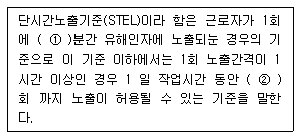
- ① 15, ② 4
- ① 30, ② 4
- ① 15, ② 2
- ① 30, ② 2
(정답률: 84%)
92. 다음 중 기관지와 폐포 등 폐 내부의 공기통로와 가스 교환 부위에 침착되는 먼지로서 공기역학적 지름이 30㎛ 이하의 크기를 가지는 것은 무엇인가?
- 흉곽성 먼지
- 호흡성 먼지
- 흡입성 먼지
- 침착성 먼지
(정답률: 61%)
93. 다음 중 간장이 독성물질의 주된 표적이 되는 이유로 바르지 않은 것은?
- 혈액의 흐름이 많다.
- 대사효소가 많이 존재한다.
- 크기가 다른 기관에 비하여 크다.
- 여러 가지 복합적인 기능을 담당한다.
(정답률: 64%)
94. 흡입을 통하여 노출되는 유해인자로 인해 발생되는 암 종류를 틀리게 짝지은 것은 무엇인가?
- 비소-폐암
- 결정형 실리카-폐암
- 베릴륨-간암
- 6가크롬-비강암
(정답률: 50%)
95. 다음 중 주성분으로 규산과 산화마그네슘 등을 함유하고 있으며 중피종, 폐암 등을 유발하는 물질은 무엇인가?
- 석면
- 석탄
- 흑연
- 운모
(정답률: 78%)
96. 다음 중 작업환경 내 발생하는 유기용제의 공통적인 비특이적 증상은 무엇인가?
- 중추신경계 활성억제
- 조혈기능 장애
- 간 기능의 저하
- 복통, 설사 및 시신경장애
(정답률: 58%)
97. 다음 중 수은중독에 관한 설명으로 바르지 않은 것은?
- 수은은 주로 골 조직과 신경에 많이 축척된다.
- 무기수은염류는 호흡기나 경구적 어느 경로라도 흡수된다.
- 수은중독의 특징적인 증상은 구내염, 근육진전 등이 있다.
- 전리된 수은이온은 단백질을 침전시키고, thiol기(-SH)를 가진 효소작용을 억제한다.
(정답률: 53%)
98. 사업장 근로자의 음주와 폐암에 대한 연구를 하려고 한다. 이 때 혼란변수는 흡연, 성, 연령 등이 될 수 있는데 다음 중 그 이유로 가장 적합한 것은 무엇인가?
- 폐암 발생에만 유의하게 영향을 미칠 수 있기 때문에
- 음주와 유의한 관련이 있기 때문에
- 음주와 폐암 발생 모두에 원인적 연관성을 갖기 때문에
- 폐암에는 원인적 연관성이 있는데 음주와는 상관성이 없기 때문에
(정답률: 44%)
99. 다음 중 직업성 천식을 유발하는 원인 물질로만 나열된 것은 무엇인가?
- 알루미늄, 2-Bromopropane
- TDI(Toluene Diisocyanate), Asbestos
- 실리카, DBCP(1,2-dibromo-3-chloropropane)
- TDI(Toluene Diisocyanate), TMA(Trimellitic Anhydride)
(정답률: 78%)
100. 다음 중 유해물질의 독성 또는 건강영향을 결정하는 인자로 가장 거리가 먼 것은 무엇인가?
- 작업강도
- 인체 내 침입경로
- 노출농도
- 작업장 내 근로자수
(정답률: 74%)